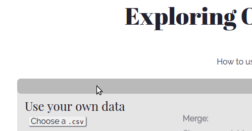
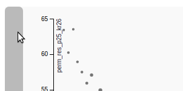
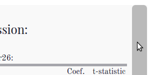

This page explains how to navigate and use the features of the Exploring
Opportunity site that visualized the Equality of Opportunity data from
the Chetty et al. (2014) study identifying the causal effects of
geography on social mobility.
This site was developed and tested using Chromium Browser (Google
Chrome). If something looks or acts a bit off, it might be because of your browser.
Jump to:
Variable Definitions
There are a lot of variables and abbreviations. Here’s the
documentation with all the definitions and the naming scheme.
Navigation:
Each of the option side-bars can be closed and opened
by clicking on the light gray bars like the one below:
Zoom:
Click to zoom and center on a geographic-level. To get a closer look,
click on a smaller region; the map scales proportionally to its area.
You can recenter the map by clicking the same location twice or by
clicking on the background of the map.
Using your own data:
This site allows you upload and merge data to the EO dataset.
These files will not be saved. To prevent data loss, I suggest
saving all of you data
(at the very least the geographic identifiers) that you intend to use
as UTF-8 encoded character strings before attempting to load it.
Variable names in you dataset and the EO dataset can’t be the same,
or the EO data will be overwritten.
Note on null types:
Variables should not be stored as null unless you expect them to be treated as zeros or if they are stored as a character string and you expect them to treated as missing values. Variables in this form have not been rigorously tested; you may risk data loss and failed or incorrect merges.-
Click the light gray bar at the top of the page, above the map—a dropdown box will open.
 -
ClickChoose a .csvA dialog box will open. Choose the file you want upload.
-
Once the file is successfully opened, the rest of the menu will be become active. Click the dropdown box above the Information box. Choose the variable in your dataset that will match to the EO dataset based on geographic location. This geographic identifier must be a concatenation of the 2000 two-digit state FIPS and three-digit county FIPS codes with leading zeros. For more information on FIPS codes see the IPUMS description.If you are loading data with missing geographic identifirs, they should be stored as NA or NaN (see note on null values).
-
Once your data is uploaded, you will see information about the success of the merge.There are two ways for your merge to partially or completely fail: your data contains geographic identifiers not found in the EO data or vice versa.If the merge partially (or completely) failed, you can download a .json file that contains the unmatched observations from your dataset and some information about the unmatched observations from the EO dataset. A generalized example of the file structure is below:{
unmatched_cli:
[{var1: observation1, var2: observation1, ..., varK: observation1},
{var1: observation2, var2: observation2, ..., varK: observation2},
...,
{var1: observationN, var2: observationN, ..., varK: observationN}],
unmatched_serv:
[{GEOID: observation1, ST: observation1, COUNTY: observation1},
{GEOID: observation2, ST: observation2, COUNTY: observation2},
...,
{GEOID: observationN, ST: observationN, COUNTY: observationN}]
} -
If your merge was partially (or completely) successful, you’ll be able to export the data as a .csv
You will now be able to use any of the mapping, plotting, regression
table, and monotonic transformation features on your data.
Multiple datasets can be opened and merged as long as they don’t
have the same variable names of those in the EO data or your previously
loaded files.
Using the U.S. Census Bureau’s API:
If there’ some additional demographic or economic data maintained
by the U.S. Census Bureau, you can add it using their API.
You aren’t already familiar with the API, you may want to take a
look at the documentation for the various data sets.
Depending on the dataset or years you select, this site will merge state
or county level data. You can add multipule years/sources and export the
merged data to a .csv file.
- Click the light gray bar at the top of the page, above the map—a dropdown box will open.
- ipsum
Regression Table:
You can run an multi-variate Ordinary Least-Squares regression using the
EO dataset or any data you may have uploaded.
-
Click the light gray box next to the left of the plot; a box will open with options for a regression specification.
 -
Select an outcome as the left-hand-side variable of the regression you’d like to run and select any number of right-hand-side variables from the available covariates.If you successfully uploaded any data you should see those variables at the top of each list.
-
ClickRun!and a table of regression coefficients, standard errors, number of observations, R², and F-test will load to the right of plot if your specification wasn’t malformed.
Note on p-values:
P-values and stars are not currently supported. You’ll have to pay close attention to the value of the coefficient and the size of the standard error.Plotting:
This site a scatter plot feature. As default, the dependant variable is
grouped into 64 bins. The mean value of the dependant and independent
variable is plotted. The size of each point represents the relative
number of observations in each bin.
-
To open the plotting options window, click the light gray box to the right of the regression table.
 -
Select the independent (y-axis) and dependent (x-axis) variables and a monotonic transformation when appropriate.It should plot immediately. Wow! One less click than the regression table.
-
You can fit the data to a linear or quadratic functional form using the Fit Trend option.
-
You can choose any number of bins between 2 and the number of observations. Any choice outside this range will load a traditional (unbinned) scatter plot.